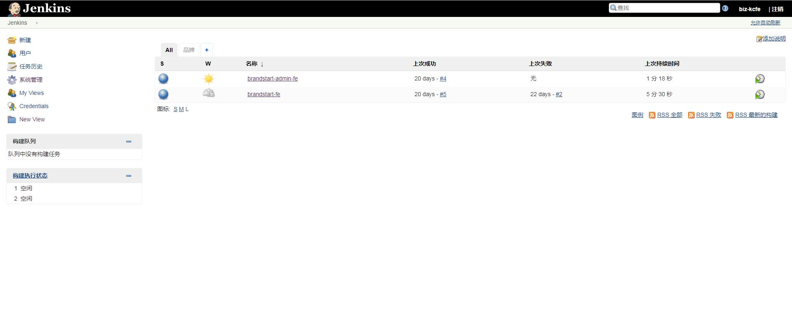
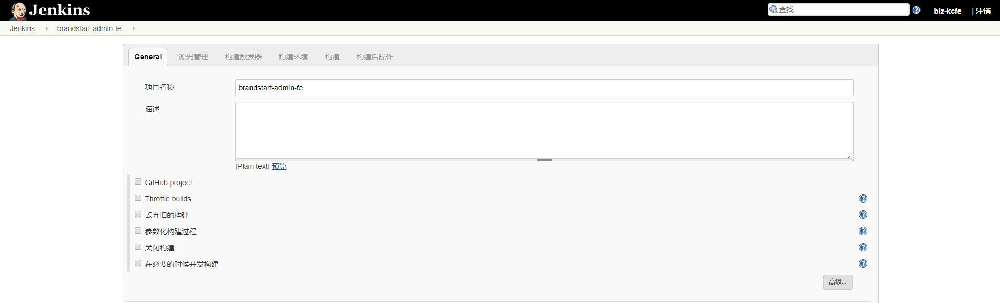
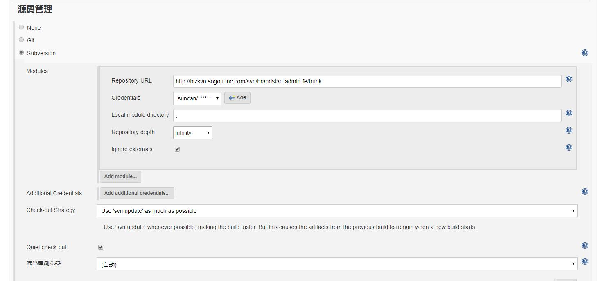
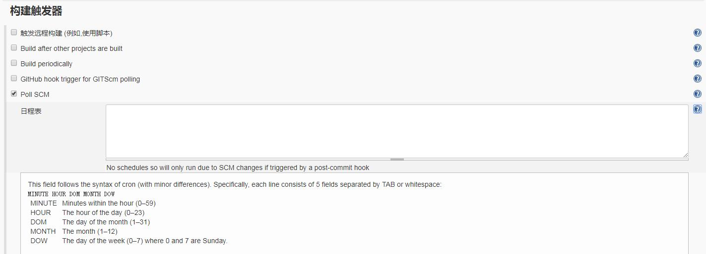
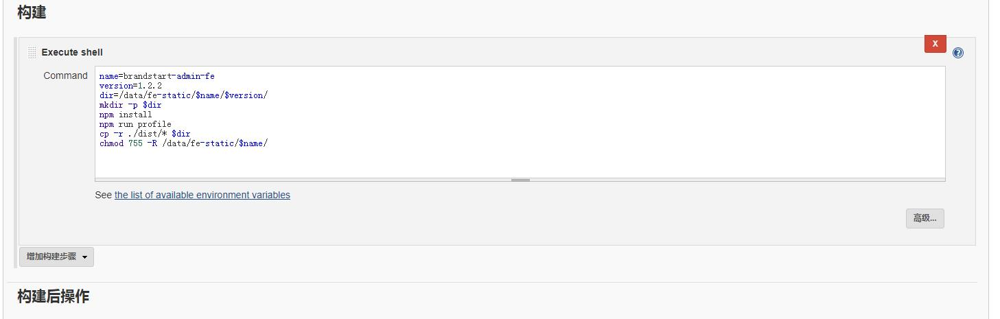
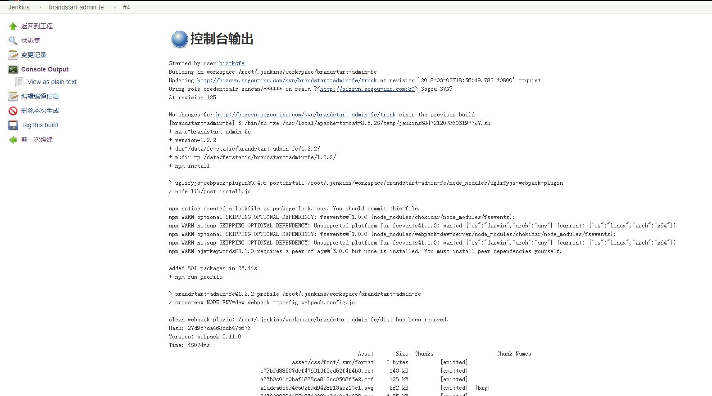

前端持续集成
编写代码只是软件开发的一小部分，更多的时间往往花在构建（build）和测试（test）。之前介绍了前端的单元测试，这篇再介绍和实践一下前端的持续集成（Continuous integration），简写为CI。
什么是持续集成
持续集成是一种软件开发实践，即团队开发成员经常集成他们的工作，通过每个成员每天至少集成一次，也就意味着每天可能会发生多次集成。每次集成都通过自动化的构建（包括编译，发布，自动化测试）来验证，从而尽早地发现集成错误。
持续集成的益处：
- 减少风险
- 减少重复过程
- 任何时间、任何地点生成可部署的软件
- 增强项目的可见性
- 建立团队对开发产品的信心
集成工具
GitHub 上比较主流的持续集成工具有 Travis CI 和 Circle CI；分别占市场占有率前两位，两者的功能和使用都比较相似，其中Travis CI用的最多，就选择Travis CI进行介绍。
Travis CI 只支持 Github，不支持其他代码托管服务。这意味着，你必须满足以下条件，才能使用 Travis CI。
- 拥有 GitHub 帐号
- 该帐号下面有一个项目
- 该项目里面有可运行的代码
- 该项目还包含构建或测试脚本
Travis有两个网址，org的那个是非盈利的，为GitHub上public的repository提供免费服务；com的那个是盈利的，可以对private的提供付费服务。com前100次build是免费的，此后按月收费。
使用很简单，用GitHub 账号登录后,Travis 会列出 Github 上面你的所有仓库，以及你所属于的组织。此时，选择你需要 Travis 帮你构建的仓库，打开仓库旁边的开关。一旦激活了一个仓库，Travis 会监听这个仓库的所有变化。
流程很简明，但绝大多数复杂度都集中在这个.travis.yml文件。这是一个YAML文件，主要用来做CI的配置。Travis会按照这个文件配置的方式来运行。
以下是项目中使用travis的简单例子：1
2
3
4
5
6
7
8
9
10
11
12
13
14
15
16
17
18language: node_js
node_js:
- "8"
install:
- npm install -g codecov
- npm install
before_script:
- "export DISPLAY=:99.0"
- "sh -e /etc/init.d/xvfb start"
- sleep 3 # give xvfb some time to start
script:
- cross-env TRAVIS=true karma start --single-run
- codecov
Travis 的运行流程很简单，任何项目都会经过两个阶段。
1 | - install 阶段：安装依赖 |
Node 项目的install和script阶段都有默认脚本，可以省略。
1 | - install 默认值：npm install |
完整的生命周期，从开始到结束是下面的流程:
1 | 1. before_install |
更多用法可查阅官方文档，官方文档比较详细。
在上面的例子中，每次代码 push 以后，Travis 会自动开始构建，并运行单测，最后得到构建
状态如下
点击状态图标，可以在弹出界面中得到该项目的状态图标链接。放到repository的README.md中，就可以在GitHub页面得到编译状态的展示了。
另外，如果多次提交同时push，默认只在最新提交执行一次build；在git commit中如果包含[skip ci]或[ci skip]，该提交就不会触发一次build。
集成测试覆盖率工具
代码覆盖率报告可以为编写测试程序提供参考，通过一些工具，还可以及时的把你的代码的测试情况及时的反馈给用户，让用户感知你的测试是否完备。
GitHub 上比较主流的代码覆盖率集成工具有 codecov 和 coveralls；两者也差不多，在之前travis的例子中选择使用了codecov。
同样使用GitHub 账号登录，第一次使用时，默认是没有 repository 的，需要通过点击 + Add my first repository 来添加需要 codecov 管理的 repository。无论 codecov 还是 coveralls，
它自身都不会去运行测试用例来获得项目代码的覆盖率，而是通过收集覆盖率报告及其他关键信息来静态分析。codecov 可以接收 lcov, gcov 以及正确的 json 数据格式作为输入信息。
该例子就是在travis CI 平台中跑完测试用例后，将测试报告中的 lcov 和 json 文件提交至codecov 平台进行覆盖率分析，同样分析的覆盖率结果的徽章图标也能从平台中获取，可以加入到GitHub repository 的README.md中。
1 | language: node_js |
跨浏览器集成测试
浏览器端使用的库，在各个浏览器端的兼容性也是非常重要的。跨浏览器测试同样有 2 个选择，SAUCELABS 和 BrowserStack，可以进行浏览器兼容性测试。这里没有详细实践过，怎么操作可以去参考文章看。
至此，CI 除了能跑跑测试、显示覆盖率之外，还能自动部署发布，怎样部署也在 yaml文件中进行脚本编写，这里就不举例子了。以上说的都是源代码放在 Github 上的开源代码，但相信我们接触得更多的应该是公司的私有代码，私有代码的项目也有 CI 解决方案，就是Jenkins，其前身是 Hudson。
Jenkins
这里先搭建了一个 Jenkins， 搭建过程可自行搜索，说下能解决什么问题。比如有这样的场景：
- 前后端分离后希望将前端某版本代码部署至服务器，供联调，查看构建过程等用途；
- 每次代码提交后都能自动构建自动部署，无须任何操作；
- 项目紧张时，领导希望能看到每天程序员提交代码后，项目的进展情况等。
这些场景下， Jenkins 都能帮助解决，凡是需要自动构建自动部署的，它都能帮上忙。这里举例大致说下怎么使用，就以将某个业务系统前端代码自动构建部署至nginx服务器为例。
第一步：新建项目，左边菜单第一项。


第二步：进行相关配置，填写源码配置，可选择仓库源，git和svn都支持。

第三步：进行构建触发配置，可设置触发构建的情形，例如代码提交时构建，按日程表构建等。

第四步：填写构建部署脚本。

第五步：保存并进行构建，查看构建情况。

详细配置可以上Jenkins中查看，构建过程包括自动更新svn代码，安装或更新npm包，进行webpack打包，将打包后的代码部署至静态资源服务器。
至此完成前端代码的构建和部署，每次提交代码，构建过程全自动运行，当状态指示灯变蓝时就表示构建成功，我们可以访问服务器前端资源了。
这只是一个比较简单的例子，还有不少其他功能，Jenkin有很多插件，总之很强大。当然不同的项目可能会有不同的构建过程，可以自己按需设定构建过程。
结语
结尾来个段子：
以前我坚持认为代码应该是 clean 的，架构应该是简洁的，流程应该是自动化的，文档应该是齐全的，技术是应该分享的。 效率较高不加班，结果 kpi 被差评，领导认为我无所事事。 最近半年我换了风格，架构重度设计，类名变量模糊不清，没有注释，现在大家都离不开我了，kpi 也上去了。
段子笑一笑而已，最后还是希望能运用到前面的持续集成工具来实现流程自动化，可以将一些重复性的工作尽量交给自动化工具来帮我们解决。